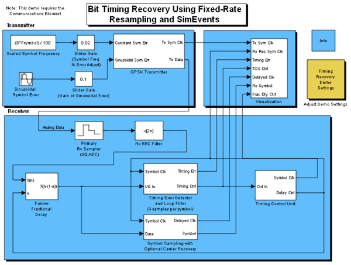
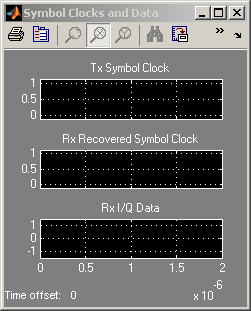
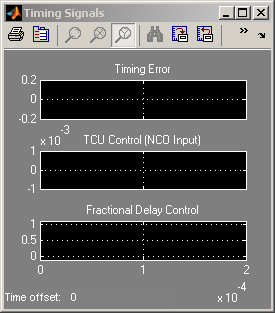

Bit Timing Recovery Using Fixed-Rate Resampling and SimEvents
Contents
Overview
This model, which is based on the Timing Recovery Using Fixed-Rate Resampling demo in the Communications Blockset™ product, illustrates how to model the time-varying drifting of clocks at a transmitter and receiver in a communication system. Furthermore, the technique in this model exploits asynchronous behavior, which is more efficient during the simulation than the original demo's technique of tracking zero crossings of a voltage-controlled oscillator (VCO) in continuous time.
To learn about the underlying communication system, ways to explore the demo, and what the plots mean, see the description of the original Timing Recovery Using Fixed-Rate Resampling demo. The rest of this section describes how this demo differs from the original and how this demo implements time-varying drifting of clocks.
Comparison with Original Demo
Unlike the original demo, this demo
- Uses a discrete-event function-call generator instead of a continuous-time VCO within the QPSK Transmitter subsystem.
- Omits a carrier offset, instead focusing more on the timing recovery process. You can see the difference in the QPSK Transmitter subsystem's Carrier Offset and Conversion to Continuous Time subsystem and also in the absence of the Enable carrier recovery option in the block labeled Adjust Demo Settings.
- Enhances the ability to model clock drift between the transmitter and receiver. This demo adds a sinusoidally varying error in symbol timing to the original demo's constant error.
The sinusoidal error causes an error in symbol timing that varies smoothly and assumes positive and negative values. The drift in the transmitter's symbol clock causes the timing recovery component in the receiver to continually change the rate at which it drifts in response.
If you run the original demo with a carrier offset of 0 and run this demo with a sinusoidal error of 0, you get equivalent results.
  Calling a Subsystem at Arbitrary Times
The figure below, which shows part of the QPSK Transmitter subsystem's DES Voltage Controlled Sample Rate subsystem, illustrates how this demo calls a function-call subsystem at arbitrary times during the simulation. The arbitrary times do not need to be multiples of a fundamental sample time.

During the simulation, blocks in the figure behave as follows:
1. At time T0=0, the Function-Call Generator block generates a function call.
2. The function call at time T0 causes the Signal-Based Event to Function-Call Event block to read the current value, t0, of the t input signal. The block then schedules an event for time T1=T0+t0.
In this model, the t signal is the reciprocal of the sum of the
reference frequency, constant frequency error, and sinusoidal
frequency error.3. When the scheduled event is processed at time Ti (i=1,2,3,...), the Signal-Based Event to Function-Call Event block issues two function calls:
a. The function call at the f1 output port connects to a Mux block,
which in turn connects to the same Signal-Based Event to
Function-Call Event block. In other words, the Signal-Based Event
to Function-Call Event calls itself. (The purpose of this Mux
block is to create a union of function calls from more than one
source.) This function call causes the block to read the current value,
ti, of the t input signal. The block then schedules an event for
time Ti+1=Ti+ti. b. The function call at the f2 output port calls the function-call
subsystem that connects to the outport. The function-call
subsystem does not appear because it is in the upper level of the
block diagram.4. The process in step 3 repeats throughout the simulation. In effect, the Signal-Based Event to Function-Call Event block uses the t input signal as an intergeneration time for generating function calls, uses the f1 output port to iterate, and uses the f2 output port to call the function-call subsystem at the desired times.